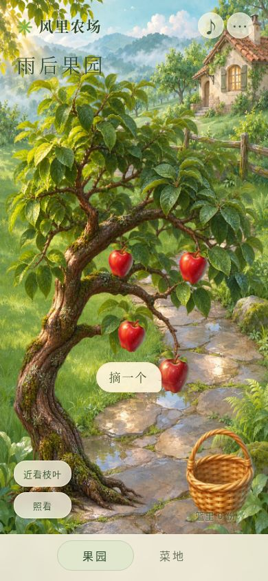
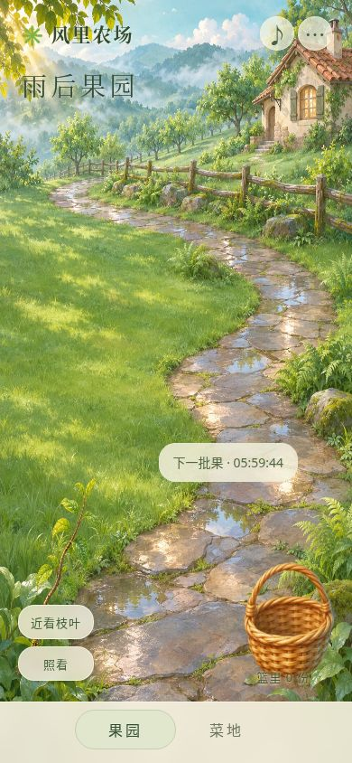

雨后果园
直接进果园
独立示范档，打开就有熟果。正式首页和正式存档保持原样。
18秒连续实玩
全新桌面Chromium资料，360×800，30fps，无剪辑或加速。点果、落篮、去菜地、返回、近看。
同尺寸首屏
上次默认首屏 · 幼苗 本次默认示范 · 可摘苹果
本次默认示范 · 可摘苹果
同视口390×844；两版默认树龄不同，并非同龄树对比。
本次幼苗

npm test、npm run test:farm通过。360／390／412宽度无横向溢出，直接摘果及菜地往返可用。未使用安卓真机，未实测安卓自带浏览器、GPU与弱网。完整改动与验收记录